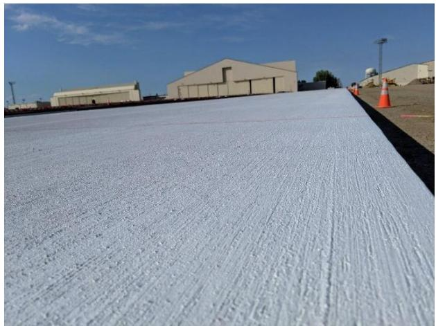
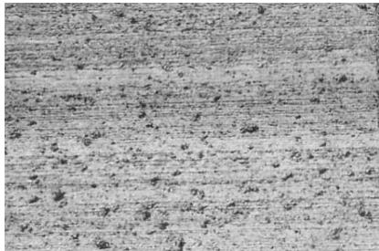
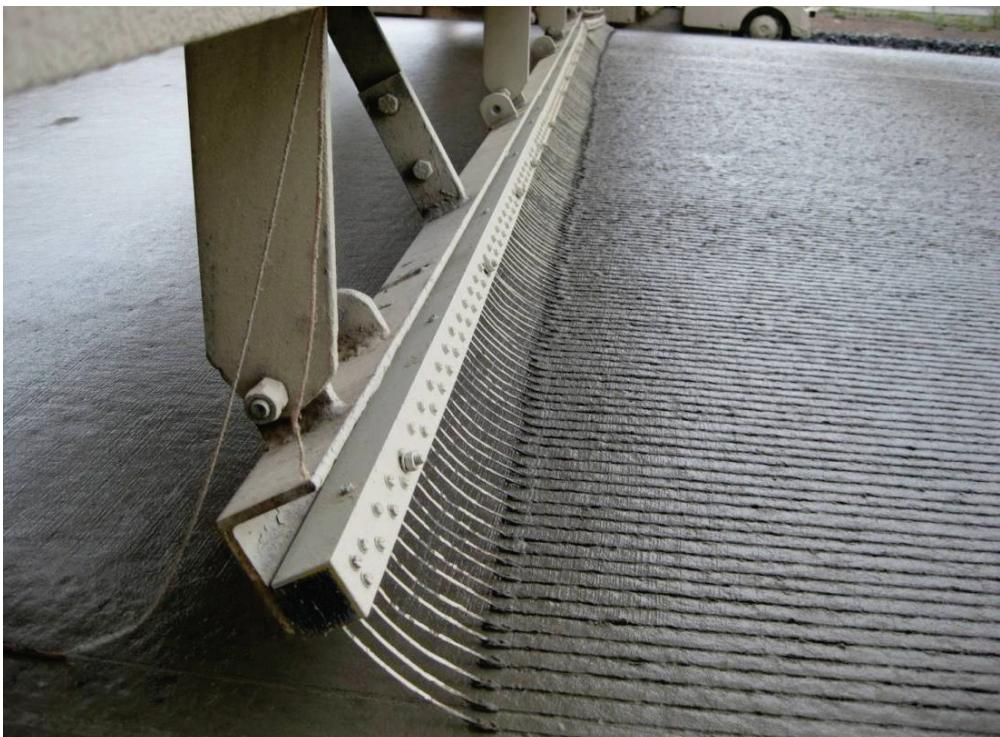
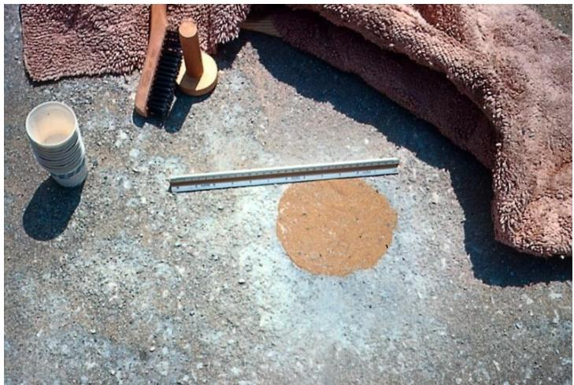
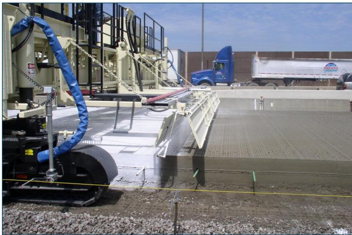
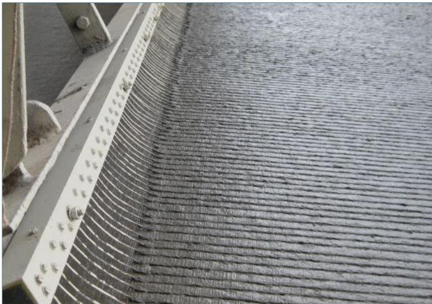
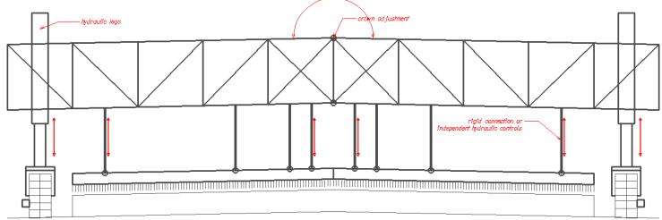

Surface Texture Depth Control
Surface Texture Depth Control is a construction technique that creates a uniform shallow network of channels and peaks on fresh concrete pavements to provide consistent skid resistance, reduce hydroplaning risk, and limit tire‑pavement noise. It achieves this by applying an approved texturing medium—such as moistened coarse burlap, a full‑width broom, or an artificial‑turf drag—to the slab while it is still plastic and before any curing compound is placed, producing 1⁄16‑ to 1⁄8‑inch deep striations that are verified visually and by mean texture depth testing. The method requires precise timing after bleed water disappears, calibrated equipment (an automated texture/cure cart with controlled tine spacing, angle and pressure), and a coordinated crew to maintain parallelism across the pavement cross‑section and ensure immediate curing, thereby delivering a uniform, performance‑controlled surface texture. [2][3][4]
Sources (5)
Purpose and applicability
Surface Texture Depth Control solves the problem of inadequate and inconsistent pavement surface texture that compromises safety, performance, and quality assurance. It eliminates the lack of skid resistance on airport concrete pavements by creating a uniform shallow network of channels and peaks that relieve hydrostatic pressure beneath aircraft tires and give the tires reliable contact, thereby preventing hydroplaning and ensuring traction. The method also confronts the persistent problem of producing non‑uniform, insufficient pavement texture—variations that prevent the surface from matching its nominal pattern, lead to uneven performance, and generate excessive tire‑pavement noise; variability in the as‑constructed texture can lead to very different tire‑pavement noise levels. Finally, it provides a practical inspection approach for the difficulty of accurately measuring pavement texture: crews check tine spacing and observe nominal texture depth – it is impractical to measure texture depth, look for texture that is obviously too deep or too shallow – thereby preventing unacceptable surface conditions. [2][3][4]
[2] — Ch. 5 (pp. 253–256); [3] — 2 Overview of Concrete Pavemen… (pp. 15–26), Texture/Cure Equipment (p. 13); [4] — 5. Plant Site and Mixture Prod… (p. 78)
Surface texture depth control is appropriate when the pavement requires a uniform, consistent texture depth and the cross‑section is non‑crowned with a uniform cross‑slope; in those cases the elevation of the texture rake or drag can be kept level with the paving stringline, allowing an automated texture/cure cart to keep its supports parallel across the slab width. The technique is also suitable for relatively narrow slabs—specifically, slabs that are twenty feet wide or less—where a single operator can sweep a pole‑mounted broom transversely at a 90° angle to concrete placement. When the pavement cross‑section is crowned, changes between tangents and curves, or when slab widths exceed about twenty feet, the automated elevation control cannot reliably follow the geometry and the pole‑broom method becomes impractical; under those conditions another texturing approach—such as manual or transverse tining with half‑inch or smaller spacing—should be used. Manual tining alone does not achieve the same degree of consistency in uniformity and depth. [3][5]
The figure below illustrates how this limitation manifests as nonuniform texture depth across the width of a transverse tining rake.
 Nonuniform texture depth across width of transverse tining rake [3]
Nonuniform texture depth across width of transverse tining rake [3]
The image displays a concrete pavement surface featuring parallel, longitudinal striations created by a texturing tool. A distinct vertical line divides the slab into two sections with contrasting textures: the left side exhibits deep, dark grooves while the right side shows shallow, faint lines.
[3] — 2 Overview of Concrete Pavemen… (pp. 18–25); [5] — Pole Broom Method (p. 45)
Required inputs
The guides require that fresh concrete be delivered with consistent density, workability, and gradation so the tines can engage the slab uniformly. Surface texture depth control is achieved by applying one of three approved media to a plastic‑state slab before curing compound is applied: moistened coarse burlap with a minimum density of 15 oz/yd², a full‑width broom or brush that creates uniform corrugations approximately 1⁄16‑ to 1⁄8‑in. deep, and an artificial‑turf drag having at least 7,200 polyethylene blades per square foot (≈0.85 in long) with a minimum two‑foot contact length. Because the timing of texture application depends on the visibility of bleed water, mixtures containing Type IL cement produce less bleed water than those using traditional Type I cement, and crews must develop trial‑batch protocols to apply texture as soon as bleed water disappears, adjusting the timing as weather and mixture conditions change. Finish texturing before the surface of the pavement experiences any drying, and then apply curing compound without delay; equipment speed should remain consistent throughout the pass. [2][3]
The following figure illustrates the appearance of burlap drag textures during and after application.

Perspective view of a concrete pavement surface textured with a burlap drag. [2]The image displays a close-up perspective of a freshly paved concrete slab exhibiting a uniform, fine striated texture consistent with the application of a moistened coarse burlap drag.
[2] — Ch. 5 (pp. 253–256); [3] — App. A (pp. 40–41), App. B (p. 42)
The required surface‑texture depth for newly placed pavement is approximately one‑sixteenth to one‑eighth inch, “produces 1⁄16- to 1⁄8-in. deep striations”. Texture must be created while the mix is still plastic and before any drying occurs; texturing is finished early and curing compound applied immediately, “Finish texturing before the surface of the pavement experiences any drying, and then apply curing compound without delay.” An automated texture/cure cart is required for all operations, “automated texture/cure cart is mandatory”. The primary equipment includes transverse‑tining devices or full‑width brooms. For tining, a minimum spacing of 0.5 in. is required, “If transverse tining is used, it is recommended that a minimum spacing of 0.5 in. be used,” and the land (tine) spacing should not exceed 1 in., “the land (tine) spacing, which was in excess of 1 in. in many cases.” Both limits are verified during pre‑construction inspection, “Tine spacing should be checked.” The guides also require that “control should be present along the tining rake to prevent one end of the rake from imparting texture different from the other” and that frame alignment be confirmed, “verify that the texture machine frame is parallel to the pavement cross-section for the full width of the pavement”. Frame parallelism is checked before each pass by hanging four equal‑length plumb bobs; all must contact the slab simultaneously, “hang four plumb bobs from the frame on equal-length strings” and “both sides of the machine may be lowered until all four plumb bobs are in contact with the pavement at the same time.”
Tine geometry is calibrated because “As tine length increases, texture depth decreases,” “As the angle of the tine decreases, texture depth decreases,” and “As the height of the tine relative to the pavement surface increases, texture depth increases.” Uniform travel speed and consistent downward pressure are required, “Operate the texture equipment at a consistent speed,” and adjustments to angle, length, or pressure are made to meet the nominal depth, “Adjust tine angle, length, and downward pressure to achieve the nominal texture depth required.” Bent or broken tines must be replaced, “Replace bent or broken tines as necessary.”
When brooms are used, material properties are prescribed: burlap must have a minimum density of 15 oz/yd², “For FAA projects, the burlap should have a density of at least 15 oz/yd2,” with transverse threads cut back about one foot from the trailing edge, “The transverse threads should be removed approximately 1 ft from the trailing edge of the burlap,” and handles must extend longer than half the panel width, “hand brooms to have handles that are longer than half the width of the panel.” A pole‑broom method is permitted on slabs twenty feet wide or less; it employs a “broom attached to a handle or extension pole” and the operator sweeps transversely at a right angle to placement direction, “operator brooms across the slab transversely at a 90-degree angle to the direction of concrete placement” and “normally used on slabs 20 ft wide or less.”
Pre‑construction timing is established by observing bleed water during trial batching, test paving, and the first control strip; texture is applied only after bleed water disappears. Acceptance can be confirmed with a sand‑patch or glass‑sphere test, “The most common method of characterizing texture is depth using the volumetric or “sand” patch test (ASTM 2001),” and spot checks may use a coin or tire‑tread gauge, “These are often done with a coin, tire tread gauge, or other graduated device that fits inside of the groove left by the tine.” Real‑time monitoring may employ laser‑based profilers. Where precise measurement is impractical, visual inspection for obvious over‑ or under‑texture is accepted, “Observe nominal texture depth – it is impractical to measure texture depth, look for texture that is obviously too deep or too shallow.” [1][2][3][4][5]
The following figure illustrates how excessive intermediate aggregates near the surface can result in undesirable texture.
 Close-up of a concrete surface showing deep, irregular striations caused by excessive intermediate aggregates. [3]
Close-up of a concrete surface showing deep, irregular striations caused by excessive intermediate aggregates. [3]
The image displays a close-up view of a textured concrete pavement featuring prominent vertical ridges and grooves that appear significantly deeper than standard specifications. A red ruler is placed horizontally across the top of the surface to provide scale for the texture depth.
[1] — Ch. 8 (p. 244); [2] — Ch. 5 (pp. 253–256); [3] — 2 Overview of Concrete Pavemen… (pp. 15–25), App. A (pp. 40–41), App. B (p. 42); [4] — 5. Plant Site and Mixture Prod… (p. 78); [5] — Pole Broom Method (p. 45)
Equipment and personnel
Surface texture depth control relies on specific texturing tools and a test apparatus. For finishing the fresh concrete before curing, crews use either a motor‑driven bridge to drag moistened coarse burlap (minimum 15 oz/yd²) or an artificial‑turf pad with about 7,200 polyethylene blades per square foot, both of which create 1⁄16‑ to 1⁄8‑in. deep striations; alternatively a full‑lane wide broom (or hand broom with a handle longer than half the panel width on isolated slabs) is swept transversely across the slab after bleed water disappears to produce comparable corrugations. After the pavement has hardened, mean texture depth is verified with the sand‑patch test (ASTM E965), using a calibrated volume of specially graded sand or manufactured glass spheres spread by a small disc to form a circular patch whose area is measured. The excerpt does not describe equipment for preparation, placement, compaction, consolidation, or curing. [2]
The following figure illustrates the visual appearance of these three common surface textures used for airport pavements.

Close-up view of a burlap drag surface texture on concrete. [2]The image displays a close-up, monochromatic view of a concrete pavement surface exhibiting fine, parallel striations running horizontally across the frame.
[2] — Ch. 5 (pp. 253–256)
Surface texture depth control requires a coordinated crew that includes a QC manager who works with the paving crew to set timing protocols, concrete finishers, qualified technicians for volumetric testing, and operators of texturing equipment. The guides agree that personnel must possess a “trained eye” and be able to “develop a trained eye and devise an effective protocol for timing the operation because bleed water is not easy to see.” They must observe bleed‑water formation during trial batches and determine the optimal moment for texture application, as stated: “To establish a protocol, the QC Manager and paving crew must carefully observe bleed water formation and determine the optimal timing for texturing (and curing) …” Concrete finishers are expected to operate brooms or drags with precision: “the concrete finisher should draw the broom transversely across panels from the centerline to the edge in slightly overlapping passes,” and keep the burlap moist, washing or replacing it as needed: “The paving crew should keep the burlap moist and replace it as needed to achieve a consistent surface texture.”
For equipment‑based texturing, a qualified technician must conduct the sand‑patch (volumetric) test and apply professional judgment when spreading glass‑bead material: “the test relies on the technician’s judgment to determine if the volume of material … is properly spread.” The texture‑machine operator must make all on‑the‑fly crown adjustments because “This adjustment is completely operator‑dependent, and at this time no automatic controls are available for texturing equipment,” and must be aware of cross‑slope changes that are marked with project signage: “Cross‑section changes should be visibly marked with signs on the project so that the texture machine operator is aware of the location and rate of cross‑slope changes.” Consistency is reinforced by assigning “equipment operators that are properly trained and skilled in their craft” to the same lane or segment repeatedly: “having the same operator day‑in and day‑out to improve texture consistency.”
When the pole‑broom method is used, it can be “typically accomplished by one person using a broom attached to a handle or extension pole,” but for slabs approaching width limits a second crew member may assist: “though sometimes another person on the opposite side of the pavement assists in the operation.” The operator must sweep transversely at a right angle to placement direction: “The operator brooms across the slab transversely at a 90-degree angle to the direction of concrete placement.”
Collectively, these roles require personnel who are trained, observant, capable of manual adjustments, and able to follow documented protocols to achieve the specified 1⁄16‑ to 1⁄8‑inch texture depth. [2][3][5]
[2] — Ch. 5 (pp. 253–256); [3] — 2 Overview of Concrete Pavemen… (pp. 15–26); [5] — Pole Broom Method (p. 45)
Work sequence
Before surface‑texture depth control can commence, the crew must confirm a series of concrete, equipment, and procedural conditions. The concrete slab must already be placed and verified to retain a plastic state, with visible bleed water eliminated and no curing compound applied; it also must exhibit uniform density, workability, and gradation. The texture‑cure system required is an automated cart; the paver, transverse‑tining rake, and cart must be inspected, free of vibrations, and equipped with a rigid frame, reliable propulsion and steering, and a smooth track line that can be referenced to a paving stringline. All crown or cross‑slope variations across the width must be identified, marked with signs, and monitored by sensors such as stringlines or sonic height devices. Operators assigned to the texture machine must be fully trained, skilled, and consistently deployed day‑in‑day‑out. Finally, the equipment’s tine spacing is checked and a visual check of nominal texture depth is performed to ensure the texture is not obviously too deep or too shallow. [2][3][4]
The following figure illustrates how clean and straight tines minimize positive texture.

Close-up of a texturing rake with clean and straight tines creating uniform striations on fresh concrete. [4]The image displays the end of an automated texture cart equipped with a rigid frame and multiple parallel metal tines dragging across a plastic concrete slab to create surface striations. The visual evidence confirms the use of clean and straight tines, which are essential for controlling texture depth without causing excessive damage to the surface.
[2] — Ch. 5 (pp. 253–256); [3] — 2 Overview of Concrete Pavemen… (pp. 18–26), App. A (pp. 40–41); [4] — 5. Plant Site and Mixture Prod… (p. 78)
- Verify equipment settings – check tine spacing before starting.
- Align the texture machine: verify that the texture machine frame is parallel to the pavement cross‑section for the full width of the pavement; hang four plumb bobs from the frame on equal‑length strings (two on either side of the crown point and two near the pavement edges); both sides of the machine may be lowered until all four plumb bobs are in contact with the pavement at the same time, and then raised in unison to maintain a parallel plane.
- Confirm concrete readiness – after trial batching watch the surface until bleed water disappears; ensure the mix is still plastic and no curing compound has been applied.
- Select and apply texture while the concrete is plastic: options include dragging moist coarse burlap (“Burlap Drag – Produced by dragging moistened coarse burlap from a device that allows control of the time and rate of texturing – usually a motorized construction bridge that spans the placement”), sweeping a transverse broom (pole‑broom method – “This method of texturing is typically accomplished by one person using a broom attached to a handle or extension pole”, optionally assisted “though sometimes another person on the opposite side of the pavement assists in the operation”; the operator brooms across the slab transversely at a 90‑degree angle to the direction of concrete placement), or pulling an inverted artificial‑turf panel. Overlap successive passes for uniform depth, targeting 1⁄16‑ to 1⁄8‑in striations.
- Set tine geometry and travel – adjust tine angle, length, and downward pressure to achieve the nominal texture depth required; Operate the texture equipment at a consistent speed. Replace bent or broken tines before the next pass and adjust for super‑elevation transitions where required.
- Complete texturing before any drying occurs and then apply curing compound immediately – “Finish texturing before the surface of the pavement experiences any drying, and then apply curing compound without delay.”
- Clean equipment – “Clean paste buildup off of the tines as necessary.” Sweep away any paste left by artificial‑turf after hardening.
- Visually verify texture depth – “Observe nominal texture depth – it is impractical to measure texture depth, look for texture that is obviously too deep or too shallow.” Accept when within this visual range.
- Determine mean texture depth using the sand‑patch volumetric method – “The MTD is determined using the traditional volumetric method commonly referred to as the “sand patch test” or ASTM E 965.” [2][3][4][5]
[2] — Ch. 5 (pp. 253–256); [3] — 2 Overview of Concrete Pavemen… (p. 25), App. B (p. 42); [4] — 5. Plant Site and Mixture Prod… (p. 78); [5] — Pole Broom Method (p. 45)
The guides require that texture be applied while the concrete remains plastic and before any curing compound is placed – “Texturing should be performed when the concrete is still in a plastic state and prior to the application of curing compound.” Texture may only begin after visible bleed water has disappeared – “Drag textures must not be applied until the concrete bleed water is no longer visible on the pavement surface.” Crews are instructed to observe trial batches, develop a trained eye, and establish a timing protocol that captures the earliest point when bleed water is gone yet still within the plastic window. Once texture is finished, curing must follow immediately with zero pause – “Finish texturing before the surface of the pavement experiences any drying, and then apply curing compound without delay,” typically on the same cart. Operators must monitor weather and mix conditions and adjust schedules to ensure this uninterrupted transition. [2][3]
[2] — Ch. 5 (pp. 253–256); [3] — App. B (p. 42), Texture/Cure Equipment (p. 13)
Staging and logistics
The guides note that surface‑texture depth control is limited by both space and environmental factors. The physical space required for the texturing device—typically a motorized bridge that must span the entire placement area—and slab geometry restrict hand‑brooming to certain locations; “Isolated odd‑shaped slabs are the only location where hand brooming is allowed.” Weather and mixture condition changes dictate when texture work can be performed; crews must “Adjust the timing of texture operations as weather and mixture conditions change” and complete the operation before the pavement begins to dry, then promptly apply curing compound—“Finish texturing before the surface of the pavement experiences any drying, and then apply curing compound without delay.” Moisture loss is further influenced by temperature, humidity and wind, with accelerated loss “especially in arid, hot or windy conditions where moisture loss can be accelerated.” [2][3]
The following figure illustrates a common modification used to manage these texturing operations.
 Turf drag attachment on a texture machine [3]
Turf drag attachment on a texture machine [3]
The image displays a mechanical apparatus positioned over a concrete slab, featuring an articulated arm that supports a wide strip of dark material. This setup corresponds to the equipment used for applying texture attachments like turf and burlap drags to fresh pavement surfaces. The device is designed to lower and lift the texturing medium from the surface of the concrete pavement.
[2] — Ch. 5 (pp. 253–256); [3] — App. B (p. 42)
Quality control and acceptance
The inspection regime for surface‑texture depth control requires verification of several interrelated characteristics. First, the texture must be produced within the prescribed depth range; as stated, “The method produces 1⁄16- to 1⁄8-in. deep striations.” The overall roughness is then quantified by establishing a Mean Texture Depth (MTD) using the volumetric sand‑patch procedure, which the guides identify as “the most common method of characterizing texture is depth using the volumetric or “sand” patch test.” Consistency of the equipment is confirmed by checking that the transverse‑tining rake operates uniformly and that the spacing of its tines conforms to design limits; inspectors therefore verify that “Tine spacing should be checked.” In addition, operational stability is essential: vibrations at both the paver and the tining rake must be limited, as the guidance advises to “Minimize vibrations—especially important for tined surfaces where vibrations of the tining rake can potentially impart undesirable texture.” Visual checks also ensure the surface does not appear excessively deep or shallow and that curing compound is applied promptly after texturing. Together these characteristics guarantee that the pavement meets the required surface‑texture depth with uniformity and precision. [2][3][4]
[2] — Ch. 5 (pp. 253–256); [3] — 2 Overview of Concrete Pavemen… (pp. 15–25), App. A (pp. 40–41), App. B (p. 42), Texture/Cure Equipment (p. 13); [4] — 5. Plant Site and Mixture Prod… (p. 78)
Measurements of surface texture depth are taken at key points in the construction process to ensure that the pavement meets the established texture standard. First, once the texture is established and accepted on a control or test section, the QC manager records the mean texture depth (MTD) using the sand‑patch method (ASTM E965). After this initial verification, additional MTD checks are performed only when the manager determines that a comparison to the project standard is needed; no routine interval is prescribed. In parallel, each time the texture machine is moved forward for a new transverse pass, the operator verifies that the machine frame remains parallel to the pavement cross‑section across the full width, using plumb‑bob checks (or automatic sensors where available) to confirm consistent application of texture. [2][3]
The following figure illustrates the sand-patch method used to measure mean texture depth.

Sand patch test apparatus and measurement of spread diameter. [2]The image displays the equipment used for a volumetric surface texture test, including a stack of measuring cups, a wooden spreading disc with bristles, and a metal ruler placed next to a circular pile of granular material on a concrete slab. This apparatus is used for the traditional volumetric method commonly referred to as the “sand patch test” or ASTM E 965, which determines mean texture depth (MTD) by measuring the area covered by a specified volume of material.
[2] — Ch. 5 (pp. 253–256); [3] — 2 Overview of Concrete Pavemen… (p. 25)
Safety and environmental controls
Uncontrolled vibrations from the paver or tining rake create a safety hazard for workers, so equipment operation and maintenance must be closely monitored to keep vibration levels low. In addition, mortar displaced by the tines can redeposit on the pavement surface, producing uneven texture that raises tire‑pavement noise and thus presents a nuisance hazard to nearby users. Using an automated texture/cure cart, as required by the guidelines, helps maintain consistent depth and reduces both vibration exposure for workers and noise impacts for the public. [3]
[3] — 2 Overview of Concrete Pavemen… (pp. 18–19)
Curing, protection, and handoff
After the pavement surface has been textured—using a burlap drag, broom, or artificial‑turf drag while the concrete remains plastic—the crew immediately applies a curing compound to seal and protect the fresh concrete. The guides require that texturing be finished before any drying occurs and that the cure be placed without delay, ensuring the protective film does not interfere with the 1⁄16‑ to 1⁄8‑inch deep striations. Curing is performed with heavy‑duty equipment; an automated texture/cure cart is mandatory, allowing the same cart used for texturing to apply the cure at a consistent speed and rate. The guidelines stress that “Heavy duty curing—curing is paramount to the durability of the pavement surface.” and that “While often done immediately after texturing on the same cart, this process cannot be compromised in terms of the timing or application rate.” To further enhance durability, multiple passes or a higher concentration of curing material are recommended whenever possible. All equipment must operate under strict vibration control, avoiding vibrations from both the paver and tining rake. [2][3]
The figure below illustrates the proper application of curing equipment on a texture-cure machine.

Curing equipment mounted on a texture-cure machine following good practice. [3]The image displays a heavy-duty automated texture/cure cart positioned at the edge of a freshly paved concrete slab, featuring a large tank and spray bar assembly. Curing equipment is often affixed to texturing equipment and warrants special consideration, especially since good curing practices are paramount to the durability of the pavement surface. The machine utilizes a spray bar with nozzles aimed at the concrete slab to apply curing compound immediately after texturing.
[2] — Ch. 5 (pp. 253–256); [3] — 2 Overview of Concrete Pavemen… (pp. 18–19), App. B (p. 42), Texture/Cure Equipment (p. 13)
Expected performance and maintenance
The guides identify several recurring failures and distresses linked to surface‑texture depth control. Equipment‑related problems dominate the list. “Minimize vibrations—especially important for tined surfaces where vibrations of the tining rake can potentially impart undesirable texture.” Vibrations or wheel hop can cause “Track‑driven equipment may inadvertently introduce small, repeating texture irregularities, as can wheeled devices due to wheel hop or imperfections,” leading to uneven groove patterns. Unstable footing and lateral drift are flagged by “Consistent tracking—texture equipment should have a stable and consistent footing and minimize lateral wander.” When the machine does not follow a straight line, “A smooth track line for the texture machine is mandatory to reduce the variability of the texture,” and “”wavy” longitudinal grooves that can contribute to the overall noise level of that surface” may appear. Contamination of the texturing medium is noted with “Cleanliness—for drag and tined surfaces, the texturing medium will always be contaminated to some degree with latent mortar.” and “”random” deposits will contribute to additional noise being generated.” Groove geometry problems arise when “the land (tine) spacing, which was in excess of 1 in.” or when cuts are too gentle: “the tine grooves are much less aggressive in the quieter section.” Excessive uniformity or large spacing can produce tonal noises: “annoying “tones” that may develop when driving this pavement.” Manual tining and worn tools add further distress; bent or broken tines must be replaced (“Replace bent or broken tines as necessary.”) and paste buildup cleaned (“Clean paste buildup off of the tines as necessary.”). Finally, the guides stress verification of tool setup: “Tine spacing should be checked.” and visual inspection of depth: “Observe nominal texture depth – it is impractical to measure texture depth, look for texture that is obviously too deep or too shallow.” Together these failures compromise the intended noise‑reduction performance and durability of the pavement surface. [3][4]
The following figure illustrates longitudinal tining on a newly placed concrete surface.

Longitudinal tining of a newly placed concrete surface [3]The image displays a close-up view of fresh concrete pavement featuring uniform, parallel longitudinal grooves created by a mechanical texturing tool. A metal frame with evenly spaced tines is visible on the left side, actively dragging across the slab to impart the texture pattern.
[3] — 2 Overview of Concrete Pavemen… (pp. 15–25), App. B (p. 42), Texture/Cure Equipment (p. 13); [4] — 5. Plant Site and Mixture Prod… (p. 78)
The guides agree that preventive maintenance for surface‑texture depth control centers on keeping all texture‑producing tools clean and in good condition—“Brooms must be washed frequently to clean off buildup and will need to be replaced as necessary to achieve a consistent surface texture,” “The paving crew should keep the burlap moist and replace it as needed to achieve a consistent surface texture,” and any paste residue left by artificial‑turf dragging should be swept away after hardening. Equipment vibration must be minimized; inspections look for sources of excess vibration, with re‑balancing or repair required—“Minimize vibrations—especially important for tined surfaces where vibrations of the tining rake can potentially impart undesirable texture,” “Vibrations of various sorts at both the paver and tining rake should also be avoided,” and “Equipment maintenance—like with the paver, proper and routine maintenance could improve the working condition of the texture/cure equipment, potentially preventing unwanted jerk or vibrations.” Latent mortar or paste buildup on drags and tines is cleaned regularly—“Cleanliness—for drag and tined surfaces, the texturing medium will always be contaminated to some degree with latent mortar,” “Clean paste buildup off of the tines as necessary.” Consistent tracking and stable footing are required—“Consistent tracking—texture equipment should have a stable and consistent footing and minimize lateral wander,” “A smooth track line for the texture machine is mandatory to reduce the variability of the texture,” and the machine must possess a rigid frame with reliable propulsion and steering—“equipment be sought that possesses a rigid frame capable of transmitting steering forces from one end to the other, along with a quality propulsion and steering system.” Alignment across the pavement width is verified each pass by plumb‑bob or electronic sensors—“verify that the texture machine frame is parallel to the pavement cross-section for the full width of the pavement,” “hang four plumb bobs from the frame on equal-length strings,” “both sides of the machine may be lowered until all four plumb bobs are in contact with the pavement at the same time, and then raised in unison to maintain a parallel plane,” with optional automatic sensors—“Some texture machines may optionally include or be adapted to have automatic sensors that assist in this process.” Crown adjustments are made when cross‑slope changes occur—“the crown adjustment of the texture machine may need to be adjusted simultaneously with the texturing process.” Tine geometry is monitored—“Tine spacing should be checked,” “Adjust tine angle, length, and downward pressure to achieve the nominal texture depth required,” and bent or broken tines are replaced—“Replace bent or broken tines as necessary.” Travel speed is kept within hydraulic limits—“speed of the machine should be kept within a limit that allows the hydraulic system being used to react as intended,” and real‑time sensing provides immediate feedback for adjusting speed, power or other settings—“real-time sensing of the as‑ground surface,” “adjust forward speed, power, or other operational characteristics.” Monitoring practices include observing bleed‑water disappearance to time texture application, establishing timing protocols from trial batches, periodically measuring mean texture depth with the sand‑patch (ASTM E965) method, and visually inspecting the placed texture for sections that appear obviously too deep or too shallow—“Observe nominal texture depth – it is impractical to measure texture depth, look for texture that is obviously too deep or too shallow.” Any deviation triggers corrective action. [2][3][4]
The following figure illustrates a schematic of the longitudinal tining texture equipment discussed above.

Schematic of longitudinal tining texture equipment [3]The figure displays a schematic diagram of the frame and hydraulic support system for a concrete pavement texturing machine. It illustrates specific mechanical components including “hydraulic legs” at the ends, “crown adjustment” mechanisms in the center, and multiple vertical actuators labeled as providing “rigid connection or Independent hydraulic controls.”
[2] — Ch. 5 (pp. 253–256); [3] — 2 Overview of Concrete Pavemen… (pp. 18–26), App. B (p. 42), Texture/Cure Equipment (p. 13); [4] — 5. Plant Site and Mixture Prod… (p. 78)
References
- Integrated Materials and Construction Practices for Concrete Pavement: A State-of-the-Practice Manual (2nd edition IMCP Manual, 2019) [link]
- Best Practices Manual: Quality Control and Quality Acceptance of Concrete Airport Pavement [link]
- How to Reduce Tire-Pavement Noise: Better Practices for Constructing and Texturing Concrete Pavement Surfaces (2012) [link]
- Field Reference Manual for Quality Concrete Pavements (2012) [link]
- Guide to Concrete Overlays of Asphalt Parking Lots (2nd Edition–Optimized for fast web viewing–2022) [link]